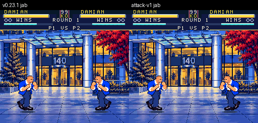
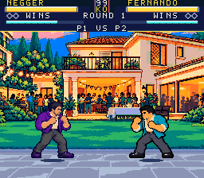
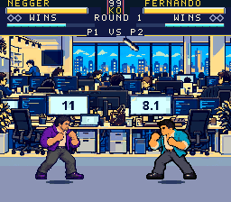
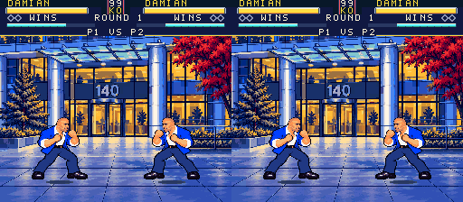
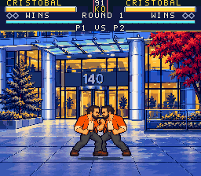

~18% slower movement
Walk, retreat and ordinary waves slow down. Ground heavies add 3 windup / 4 recovery ticks. PR #20
Abaqus After Hours · Native SNES · v0.24.0
Slower movement, clearer backward recoil, coordinated attacks, connected stages, expressive jumps and individual super art. Review the six changes together in the final emulator playtest.
PENDING_FINAL_VERIFICATION
The six feature PRs are merged into the integration branch. Draft PR #14 stays unmerged into main for human combined playtest. Every figure below is ISOLATED / HISTORICAL; none identifies the final combined cartridge.
Walk, retreat and ordinary waves slow down. Ground heavies add 3 windup / 4 recovery ticks. PR #20
Supporting feet, hips, shoulders and guard coordinate through contact and return. PR #19
Stable strike and body regions align with the visible poses and projectiles. PR #15
Whole scenery moves behind fixed, authored slab, stone and carpet floors. PR #16
Readable takeoff, apex, descent and grounded compression, with four adjusted arcs. PR #18
Twelve distinct charge, contact/cast/peak and recovery sequences. PR #17
The parent will supply its final identity. Then use Play.cmd or load dist/abaqus-after-hours.sfc in an SNES emulator. This page does not identify the ROM currently at that path as final. Choose LOCAL 1V1 / 2P for the existing two native controller ports.
| SNES input | Action |
|---|---|
| Y / X | Light / strong punch |
| B / A | Light / strong kick |
| Away / Down+away | High / low guard |
| Down+X / toward+X | Uppercut / close throw |
| Down+A / Down+B | Sweep / low light kick |
| Down+Y / QCF+Y or X | Ordinary special · 32 energy |
| Fresh neutral Y+B | Super · full 96 energy |
| Start / paused Select | Pause or resume / guide pages |
Damian's strong contact illustrates the heavier initial push and diminishing drift. Guard recoil stays smaller. Jabs/light kicks keep their quick timing; ordinary specials add 3 startup / 5 recovery ticks, and slower waves gain lifetime to preserve nominal travel. CPU defense and recovery reactions use slower, fallible sampling.


Damian's paired native sequence cycles grounded normals, specials, hurt and block poses. Check the planted foot and hip/shoulder rotation against the guard and striking limb.

The paired jab example compares the old contact rule with pose-derived regions on the approved baseline art. Final attack, jump and super art require refreshed geometry and new combined captures.

Las Condes, El Castillo and La Oficina keep buildings and desks together while the view eases behind a fixed floor. Review camera limits, contact shake, feet/shadows and pause readability in the combined playtest.





Cristobal's rush shows the new charge, driving contact and recovery drawings. The super command remains a fresh neutral Y+B with all 96 energy; this art feature keeps the existing super gameplay.


| Fighter | Attack loop | Jump sheet | Contact sheet |
|---|---|---|---|
| 00 Damian | Before / after | Native poses | All 64 |
| 01 Ivo | Before / after | Native poses | All 64 |
| 02 Cristobal | Before / after | Native poses | All 64 |
| 03 Cote | Before / after | Native poses | All 64 |
| 04 Negger | Before / after | Native poses | All 64 |
| 05 David | Before / after | Native poses | All 64 |
| 06 Fernando | Before / after | Native poses | All 64 |
| 07 Cristian | Before / after | Native poses | All 64 |
| 08 Mamariaga | Before / after | Native poses | All 64 |
| 09 Reston | Before / after | Native poses | All 64 |
| 10 Roxana | Before / after | Native poses | All 64 |
| 11 Lars | Before / after | Native poses | All 64 |
Approved main v0.23.1 is the historical baseline, identified by its own verification. The combined candidate's ROM SHA256, header checksum, source freeze, captures and exact-ROM gates all remain PENDING_FINAL_VERIFICATION.
The parent will finalize verification-v0.24.0.json (pending file). Feature reports and clips below belong to different isolated cartridges. Their results cannot be pooled into a combined pass count.
| Media group | Historical ROM prefix | Identity record |
|---|---|---|
| Approved baseline / before clips | 057139801b64 | v0.23.1 verification |
| Pacing after clips | 1b38d1631453 | ISOLATED / HISTORICAL |
| Attack after / native loops | c7f6663c5dfc | ISOLATED / HISTORICAL |
| Contact after / baseline-art regions | c2cefc9bc385 | ISOLATED / HISTORICAL |
| Stages after / native stills | aafe7b26ff1c | ISOLATED / HISTORICAL |
| Jump after / native pose sheets | 74589f915d44 | ISOLATED / HISTORICAL |
| Super after / native pose sheet | 320c26fc8f9a | ISOLATED / HISTORICAL |